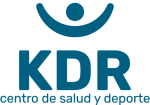

Reservar horaKinesiología, medicina, nutrición, psicología y entrenamientos para rehabilitarte, rendir mejor y cuidar tu calidad de vida.
Reservar por WhatsAppVer áreasUn equipo multidisciplinario, para que no tengas que ir de un centro a otro.
Especialistas en rehabilitación traumatológica, cardiovascular, deportiva y neurológica, entre otras.
Todos los planes tienen un enfoque en mejorar tu salud y calidad de vida. Incluye Kine Runners KDR.
Psicólogos clínicos para ayudarte en tu salud mental, y psicología deportiva.
Orientación en tu alimentación diaria.
La atención médica en KDR es muy variada.
Trata la causa de los problemas del sistema neuromusculoesquelético.
Av. Vicuña Mackenna Poniente 6456
La Florida, Santiago
Lunes a viernes, 08:00 a 21:00
Sábado, 09:00 a 14:00